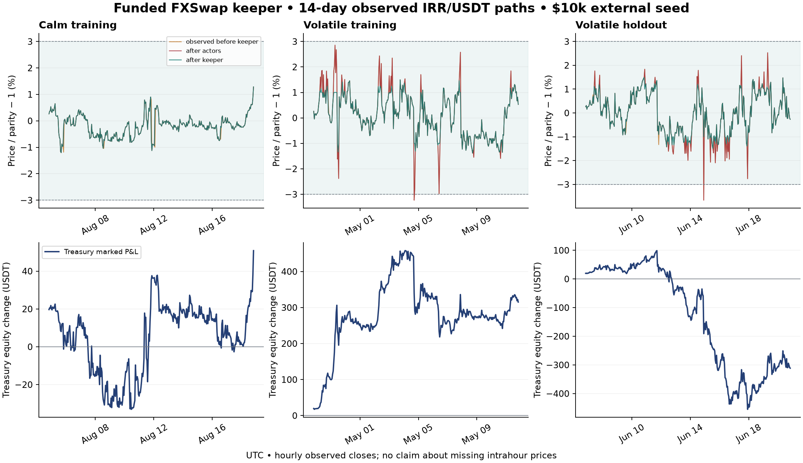

Funded FXSwap system: adversarial fortnights and live paper trading
A funded treasury keeper fixes the tested sampled-response failure; issuing more LP-backed debt alone does not. It does not guarantee a continuous 3% peg. The selected mock uses 96% LP / 4% ETH for every new debt bundle, 87.4% LP LTV, 75% ETH LTV, a 3% origination post-state guard, and finite treasury LP/inventory. No freely minted arbitrage inventory or unlimited outside market is assumed.
This is the next experiment after the long-history failure. It implements mock custody, borrowers, repayment, funded liquidation, a keeper and bounded adversaries around genuine FXSwap operations. Lending, oracle authentication and the ETH execution venue remain mocks. Nothing here deploys contracts or trades real money.
Why above-peg borrowing stalls
The borrowing route first buys the entire own-token LP leg, adds proportional liquidity, then sells newly issued debt. The pool expands along with the selling. More debt eventually has little marginal effect on the price. With a stale liquidity center, the fixed-state experiment converges above peg even without the borrowing caps: at the diagnosed old state, a further 100 million normalized tokens still leaves roughly 9.3% error. Caps, finite borrower funding and absent circulating inventory make this worse.
FXSwap’s internal trade EMA is not an independent FX reference. Quote-only refuels can initially push the above-peg price higher, and their unowned shares unlock over time. Refueling cannot substitute for token inventory or guarantee an immediate recenter. Curve describes these dependencies.
Implemented controller
For a price above the reported peg, the treasury may withdraw its own LP proportionally and sell the recovered own tokens back into FXSwap, holding the quote received. For a price below peg, it can use funded quote inventory or withdraw its own LP and buy with the recovered quote. Normal one-sided LP deposits can recycle inventory while preserving a treasury claim. Borrower collateral cannot be spent by this controller. No administrator teleports the pool’s price scale or amplification.
Training selected raw A 600,000 at launch, equivalent to A_true = 30 in this source convention. The final round retains the inspected pool’s concentration after comparing A600k and A200k with reserves of 0%, 10%, 25% and 50%. It uses 10% additional external reserve above the pool seed, a 1% repair target and 1.5% trigger. It selects among finite swaps, LP rotation and normal deposits using post-action error then treasury inventory value including assumed gas. A lower A gives less near-center concentration; it is not a free improvement to all execution sizes.
Each origination buys/deposits/locks the LP, posts ETH for the separate 4% branch, mints 96/4, and sells both debts. The transaction rolls back if it leaves the pool more than 3% from the authenticated reported peg or makes existing healthy collateral liquidatable. Raw public AMM swaps remain permissionless.
The keeper marks unhealthy vaults, then settles at most two per cycle. It preflights liquidation before submitting: controlled own tokens recovered from the vault are burned against its debt, quote funds any remaining purchase, funded insurance may cover a shortfall, and borrower surplus is returned. Residual unpaid principal remains bad debt. Marking alone never extinguishes debt. If a queued vault recovers, it leaves the queue. No future borrower is required to make settlement progress.
The mix is 96/4 at origination, excluding the disclosed bootstrap liability. Separate repayments and liquidations change the outstanding mix. New bundles pause if the remaining ETH share exceeds 4%; keeping outstanding debt exactly 96/4 would require a different paired repayment rule.
Market inputs and adversaries
Three disjoint 14-day paths were selected by hourly realized volatility before policy P&L: calm training 5–19 August 2026; volatile training 28 April–12 May; volatile validation 7–21 June, end dates exclusive in Asia/Tbilisi. Each has 337 hourly closes including the preceding-hour initial mark. The validation path is disjoint, not a forward test. Later rounds reuse it after guard and harness review; it is no longer an untouched holdout.
Wallex USDTTMN candles are multiplied by 10 to obtain IRR per USDT. Token parity is the reciprocal, normalized to 1 USDT at each launch. Actual IRR token counts multiply normalized debt by the launch IRR/USDT quote. ETH collateral uses contemporaneously available Binance ETH/USDT hourly closes. USDT/USD parity is assumed. This is a single-exchange feed test, not the proposed Telegram/Chand/multi-exchange production oracle. TRY and ARS have not been adversarially backtested by this experiment.
Only 7,200 of 60,480 requested native minutes were available across the three windows. Five complete minute days refine two paths separately; the volatile training path has no native-minute coverage. Missing minutes are never invented. Hourly closes become known at candle end. All ordered actor/keeper actions for an observation share its timestamp, as in the paper harness. This avoids overlapping helper clocks and fictitious one-second blocks, but does not model Ethereum block latency. A keeper outage disables nested keeper calls as well as its final cycle. Prior round summaries are retained.
Five finite actors start with additional external funding: LP borrower 3E quote plus 0.02E of ETH; ETH borrower 0.5E quote plus E of ETH; searcher 2E plus 0.03E of ETH; holder 0.5E plus 0.01E of ETH; LP farmer E plus 0.02E of ETH. E is the external pool seed. A separate mock ETH venue has 100E quote and 100E of ETH; its capacity and 5 bp execution fee are explicit. These resources are not counted as protocol seed equity.
The holder buys with 25% of its quote and the searcher with 10%, creating paid circulating inventory. Every six hours, actors search a disclosed small grid for funded front/keeper/back trades, borrow/repay or borrow/hold loops, LP entry/exit and profitable closure. Borrow/hold forecasts use only trailing 24-hour reference momentum, capped at ±5%; they can lose money. Discarded planning candidates spend no money and cannot change state. Executed reverts pay assumed gas. This is a bounded myopic search, not proof against an optimal attacker.
Results: $10k external pool seed plus $1k reserve
| Path | Worst before keeper | Worst after keeper | Post-response 3% breaches | Treasury marked P&L | Peak additional debt | Keeper ETH/day at 1 gwei |
|---|---|---|---|---|---|---|
| Calm training | 1.29% | 1.29% | 0 / 337 | +50.84 | 9,600 | 0.000000 |
| Volatile training | 3.23% | 1.50% | 0 / 337 | +315.17 | 6,000 | 0.000554 |
| Volatile validation | 3.66% | 1.49% | 0 / 337 | -311.28 | 6,000 | 0.000337 |
Each main run starts with 0.5E additional debt. Raw transaction endpoints reach wider errors than the post-response samples; these are retained in the JSON. Finite executable buy/sell tests of 1% of E also remain within 3% after keeper response in all nine selected hourly runs. No main run ends with bad debt or pending liquidation. None of these facts certifies the price between observations.

| External pool seed E | Extra reserve | Initial LP TVL | Initial additional debt | Observed peak debt range across three paths | Largest post-response error | Volatile-validation treasury P&L |
|---|---|---|---|---|---|---|
| 10,000 | 1,000 | 20,000 | 5,000 | 6,000–9,600 | 1.50% | -311.28 |
| 30,000 | 3,000 | 60,000 | 15,000 | 28,800–60,000 | 1.50% | +236.32 |
| 50,000 | 5,000 | 100,000 | 25,000 | 48,000–99,000 | 1.50% | +380.38 |
The observed debt peaks are not maximum safe issuance. Borrower demand, wallet funding and the 2E actor ceiling constrain them. The capacity sweep tests other launch debt levels; rejection by the 3% loan guard or insufficient gross borrower cash is a result, not a pool-capacity estimate. The earlier $31.6k-per-$10k fixed-FX burst limit used A600k, no life-cycle actions, and a different question.
If $10k–$50k instead means initial total LP TVL, external seed E is $5k–$25k and the extra 10% reserve is $500–$2,500. The selected 0.5E initial debt is $2,500–$12,500, excluding bootstrap. Fixed gas costs and profitability thresholds mean historical outcomes should be rerun at those sizes rather than scaled as exact results.
Where the money goes
| $10k-seed path | Active borrower LP versus holding its original inventory | Exited borrower LP versus holding to its exit | LP borrower P&L versus initial quote/ETH holding | Searcher P&L versus initial quote/ETH holding |
|---|---|---|---|---|
| Calm training | +0.00 | -11.46 | -72.17 | +10.95 |
| Volatile training | -137.84 | +0.00 | +37.00 | -247.44 |
| Volatile validation | +0.00 | +5.55 | -3.85 | +191.33 |
LP inventory differences include retained fees and changes in composition; they are not the borrower’s complete leveraged return. Actor P&L includes collateral, liabilities, token marks and gas. Searcher token appreciation is marked exposure, not automatically realized extraction. Treasury equity includes recoverable treasury LP, quote, own tokens and gas ETH, less bootstrap token liabilities, bad debt and active collateral shortfalls. Valid loan principal assets offset their corresponding issued liabilities; an impaired active loan is written down before settlement. This is a reference-mark impairment, not an executable recovery estimate after fees and slippage. Refuels are zero in this candidate, but a zero refuel bill does not imply zero market-making cost: treasury inventory and LP equity bear that cost.
Counterfactual attack and stress failures
A separate matched-state test gives the attacker $20k quote and 1 ETH, with $10k seed, $2.5k reserve and $5k debt. After an observed 8% rise in token parity, buying $5k before the keeper and selling exactly the acquired tokens afterward earns $107.33 after gas at A200k. Relative to the identical no-attack repair, treasury equity is $112.27 lower and borrower LP equity $3.78 higher; extra gas reconciles the remainder. The attacker has no residual acquired tokens and uses no outside own-token market. Its closing trade leaves the pool 7.55% below peg until another repair. At A600k, the corresponding profit is $90.10.
This is an unresolved execution risk. Proposed production mitigations include private atomic execution where available, independent execution-price and inventory limits, bounded loss budgets, auctions or a reviewed solver route, and a protected protocol router. They require further testing; this prototype does not claim to implement or prove them. A raw permissionless pool cannot reject every trade outside a protocol’s desired band without changing its trading rules.
| Synthetic stress on volatile training path | Worst before response | Worst after keeper | Post-response breaches | Peak pending queue | Final bad debt |
|---|---|---|---|---|---|
| down_jump | 25.17% | 1.50% | 0 | 0 | 0.00 |
| up_jump | 16.55% | 4.68% | 31 | 0 | 0.00 |
| eth_crash | 3.23% | 1.50% | 0 | 0 | 0.00 |
| feed_outage | 3.23% | 1.50% | 0 | 0 | 0.00 |
| keeper_outage | 3.23% | 1.50% | 0 | 0 | 0.00 |
| devaluation_outage | 25.45% | 25.45% | 24 | 0 | 0.00 |
| bank_run | 3.23% | 1.50% | 0 | 0 | 0.00 |
The thin 10% reserve fails the 20% appreciation case after treasury quote and usable LP are depleted. Increasing capital fixes this particular response envelope without changing 96/4 or either LTV:
| Extra reserve as share of E | Extra reserve at $10k seed | Worst post-response error, appreciation stress | 3% breaches |
|---|---|---|---|
| 10% | 1,000 | 4.68% | 31 |
| 25% | 2,500 | 3.33% | 1 |
| 50% | 5,000 | 1.48% | 0 |
| 100% | 10,000 | 1.50% | 0 |
50% extra reserve is the smallest tested passing funding level for that stress, not a proven minimum or a general guarantee. It means $5k–$25k extra reserve for $10k–$50k external pool seed. The live run retains its explicitly frozen 10% thin-reserve baseline to observe failure boundaries; it is not represented as the stress-hardened funding profile. A devaluation during an unavailable feed still breaks 3% until a new observation arrives. More reserve cannot reveal an unseen price.
Jump tests overlay ±20% changes in token parity on the observed path; these are synthetic scenarios, not real Wallex returns. The ETH crash overlays −50%. Outages last 24 hours and retain the true observed FX path. An outage that happens during a quiet section is a weak test; it does not establish outage safety under an unseen devaluation. Liquidation queue, funding and gas errors are retained in the machine-readable output.
Gas and refueling budget
Curve refuel spending is zero in this candidate. Keeper capital is the seed LP plus the extra reserve; its capital loss and foregone liquidity remain costs. At 1 gwei, the volatile $10k-seed run uses the keeper ETH/day in the table above. Gas is an explicit model assumption: swap 150k, LP rotation 280k, normal deposit 180k, origination 600k, close 350k and liquidation 450k. Multiply ETH costs by effective gas price in gwei; adequate ETH must be pre-funded. Oracle publication, reporter servers and any bridge are additional.
In the volatile $10k run, 36 successful risk-action batches over 14 days could share pull reports. Adding a separate assumed 90k gas per such report gives 0.000786 ETH/day at 1 gwei, or 0.003929 ETH/day at 5 gwei. This includes keeper transactions plus these report batches, not user-paid borrowing/repayment gas. A complete oracle implementation is still unmeasured.
| Standalone FX publication cadence | Reports/day | ETH/day at 1 gwei, assuming 90k gas/report | ETH/day at 5 gwei |
|---|---|---|---|
| Hourly | 24 | 0.002160 | 0.010800 |
| Every 15 minutes | 96 | 0.008640 | 0.043200 |
| Every 5 minutes | 288 | 0.025920 | 0.129600 |
| Every minute | 1,440 | 0.129600 | 0.648000 |
For gas conservation, generate reports offchain and publish/verify only with a needed action, reusing a still-fresh report within the stated window. The report-count metric in JSON gives successful action batches that could share a report, not a measured oracle implementation. Price collection frequency, signed-report availability and paid onchain publication frequency are different. The sampled hourly experiment does not establish a safe live update interval. Failed transactions, volatile gas, calldata/L1 data charges, a real router and signature/quorum verification need chain-specific measurement.
Genuine EVM boundary and verification
Every committed AMM operation in the nine selected hourly runs and seven stress runs is replayed against pinned genuine FXSwap creation bytecode plus genuine StableSwap math in a local EVM. The pool bytecode is unchanged; ERC20s, factory and view periphery are mocks. It is not a mainnet-state fork. Speculative strategy candidates use the float port; committed EVM results/state are compared and atomically reverted on mismatch. The aggregate EVM token custodian has a finite declared endowment; individual funding and debt constraints are enforced by the separate ledger.
Completed evidence: 1,010 genuine pool operations, 0 failed differential batches. Largest absolute float/integer difference: 1.44e-07 token units; comparisons also apply relative tolerance 2e−10. These are parity checks, not exact wei accounting in the lending mock. EVM execution gas excludes intrinsic transaction/calldata and unimplemented lending/oracle costs.
Tests reconcile own-token supply, bootstrap/vault/bad-debt liabilities, quote and ETH custody, free/locked LP, funded insurance and borrower surplus. Regression cases cover replayed/future/stale reports, stale-ETH execution prices, last-LP fee receiver cleanup, rollback and paid reverts, recovered liquidation queues, no-new-borrower settlement, and the origination guard. Signature cryptography, hostile tokens, access-control contracts, interest accrual and offchain hedges are not implemented. Borrowing interest and quote yield are set to zero to isolate market-making economics.
Live paper stage
Historical accounting/EVM verification gates an experimental 14 actual-day paper run, not a production launch. The frozen policy uses real newly retrieved Wallex closed-minute IRR/USDT and Binance ETH/USDT observations, virtual balances, persistent JSON checkpoints and bounded public data requests. Duplicate, future, out-of-order or stale data cannot authorize a decision. There are no keys, exchange orders or onchain transactions. Missed wall time is not backfilled as supposed live trading.
Live start/end, current cadence and state are recorded in the paper status. A schedule requires the local computer and desktop runtime to remain available. Data failures pause decisions while the original 14-day wall clock continues. A scheduled check is not evidence of continuous minute execution or a completed two-week run. The monitor reports meaningful failures, breaches and completion; it stays quiet otherwise. OpenAI scheduled-task runtime guidance.
The first real observation pair started the run on 21 October 2026 at 16:25:56 UTC, with a hard stop 4 November 2026 at 16:25:56 UTC. The local heartbeat is configured for 15-minute checks. This is an experimental decision cadence, not a claim of minute-by-minute peg enforcement.
Reproduce and inspect
python3 tools/fetch_sandbox_data.py --offline --cached-only
python3 -m unittest discover -s tests -v
python3 -m venv /tmp/tomax-evm
/tmp/tomax-evm/bin/pip install -r requirements-evm.txt
/tmp/tomax-evm/bin/python tools/check_fxswap_evm.py --fetch
/tmp/tomax-evm/bin/python tools/run_sandbox.py --evm
python3 tools/keeper_attack_probe.py
- Full results and declared limitations
- Summary CSV
- Committed events and adversarial decisions
- Counterfactual attack
- Additional funding envelope
- Round 1 retained
- Round 2 retained
- Model, EVM adapter, data manifests, traces and tests
- Exportable figure
Production remains gated on independent economic/oracle review, smart-contract implementation and audits, a credible executable redemption/exit route, oracle source independence, protected keeper execution and funded loss limits. The RFP includes these deliverables.